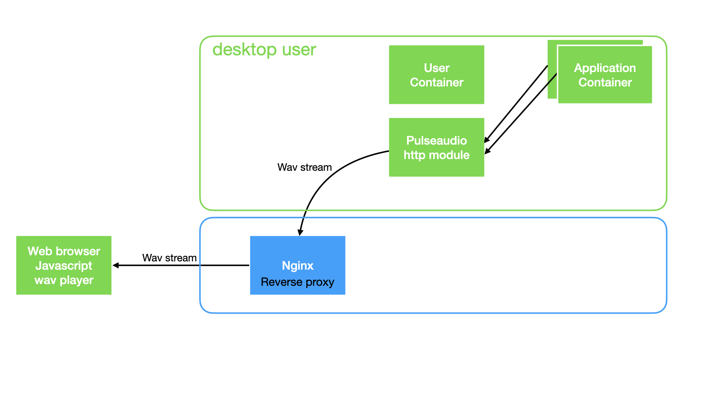
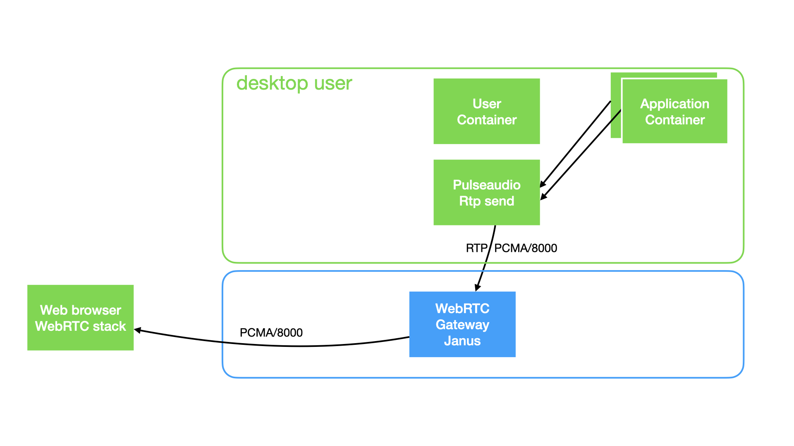

Play sound inside a docker to a web browser
Sound in docker is the big challenge
As VNC does not support sound, we have to forward a Pulseaudio null-sink output to the user browser, with no latency.
- Release 1.0 : use the pulseaudio http stream and play wave data (poor sound quality but works in https only)

- Release 2.0 : use janus webrtc gateway, send pulseaudio rtp stream to janus, and play sound using the web browser webrtc stack (good sound quality)

Release 1.0: Pulseaudio with a simple module-http-protocol-tcp and a javascript no latency wav stream player
-
webaudio-wav-stream-player No latency wav stream player using browser fetch streaming API and WebAudio
-
Pulseaudio with module-http-protocol-tcp A proof-of-concept HTTP module, which can be used to introspect the current status of the PulseAudio daemon using HTTP. Just load this module and point your browser to http://localhost:4714/. This module takes the same arguments as module-cli-protocol-tcp.
-
Create Pulseaudio null-sink
# defined with desktop 1.0
load-module module-null-sink sink_name=u8_1_11025 format=u8 channels=1 rate=11025 sink_properties="device.description='default format=u8 c=1 ra
te=11025'"
Then use
load-module module-http-protocol-tcp
Read the http stream data, using fetch call :
$targetis the container Ip Address$pulseaudio_http_portis the pulseaudio http port ( by default, the http port vallue is
http://$target:$pulseaudio_http_port/listen/source/u8_1_11025.monitor;
Pulseaudio module-http-protocol-tcp does not send wav formated header. We need to build a new wav header for each receved fragment. This is done in wavify.js file :
//
// Write a proper WAVE header for the given buffer.
// format ULAW or ALAW
// Offset is hardcoded
function wavify_law(data, numberOfChannels, sampleRate, bitsPerSample, format ) {
// // total header : 4 + 26 + 12 + 8 = 50
// // and the data and size: 50 + 8 ( data + 32 bits for the size )
var header_length = 58; // 4 + 26 + 12 + 8 + 8 = 58
var total_length = header_length + data.byteLength;
// bitsPerSample MUST BE 8 bits
// The default byte ordering assumed for WAVE data files is little-endian.
var header = new ArrayBuffer(header_length);
var d = new DataView(header);
d.setUint8(0, "R".charCodeAt(0));
d.setUint8(1, "I".charCodeAt(0));
d.setUint8(2, "F".charCodeAt(0));
d.setUint8(3, "F".charCodeAt(0));
// All integers MUST be set in bigEndian format
// Wave chunks containing format information and sampled data
// cksize 4 Chunk size: 4+n
// 4: for sizeof( 'WAVE' ) + n
// n: Wave chunks containing format information and sampled data
//var data_length = d.setUint32(4, data.byteLength / 2 + 44, true);
//bitsPerSample data.byteLength + 8+16+12
d.setUint32(4, total_length, true);
// write 4 bytes
d.setUint8(8, "W".charCodeAt(0));
d.setUint8(9, "A".charCodeAt(0));
d.setUint8(10, "V".charCodeAt(0));
d.setUint8(11, "E".charCodeAt(0));
// write 4 bytes
d.setUint8(12, "f".charCodeAt(0));
d.setUint8(13, "m".charCodeAt(0));
d.setUint8(14, "t".charCodeAt(0));
d.setUint8(15, " ".charCodeAt(0));
// All integers MUST be set in bigEndian format
// Subchunk1Size 16 for PCM.
// Offset 16
// Size 4
// This is the size of the rest of the Subchunk which follows this number.
// The size of the rest of this subchunk.
// All integers MUST be set in bigEndian format
// d.setUint32(16, 16, true);
// cksize 4 Chunk size: 16, 18 or 40
var chunksize = 18;
d.setUint32(16, chunksize, true);
// The format of the wave data, which will be 1 for uncompressed PCM data.
// All integers MUST be set in bigEndian format
// FORMAT must be WAVE_FORMAT_ULAW or WAVE_FORMAT_ALAW
d.setUint16(20, format, true);
// Indicates if the data is mono, stereo, or something else.
// NumChannels Mono = 1, Stereo = 2, etc.
// All integers MUST be set in bigEndian format
d.setUint16(22, numberOfChannels, true);
// The sample rate per second.
// SampleRate 8000, 44100, etc.
// All integers MUST be set in bigEndian format
d.setUint32(24, sampleRate, true);
// byteRate == SampleRate * NumChannels * BitsPerSample/8
// All integers MUST be set in bigEndian format
var byteRate = sampleRate * numberOfChannels * bitsPerSample/8;
d.setUint32(28, byteRate, true );
// blockAlign == NumChannels * BitsPerSample/8
// The number of bytes for one sample including all channels.
var blockAlign = numberOfChannels * bitsPerSample / 8;
// All integers MUST be set in bigEndian format
d.setUint16(32, blockAlign, true );
// BitsPerSample 8 bits = 8, 16 bits = 16, etc.
d.setUint16(34, bitsPerSample, true);
// Wave files may include an additional field, usually reserved for non-PCM formats:
// bits per Sample
// Size of the extension
// 2 bytes
// Offset
var cbSize = 0;
d.setUint16(36, cbSize, true);
d.setUint8(38, "f".charCodeAt(0));
d.setUint8(39, "a".charCodeAt(0));
d.setUint8(40, "c".charCodeAt(0));
d.setUint8(41, "t".charCodeAt(0));
var cksize = 4;
d.setUint32(42, cksize, true);
var dwSampleLength = data.byteLength; // Number of samples ( per channel )
d.setUint32(46, dwSampleLength, true);
// 50
d.setUint8(50, "d".charCodeAt(0));
d.setUint8(51, "a".charCodeAt(0));
d.setUint8(52, "t".charCodeAt(0));
d.setUint8(53, "a".charCodeAt(0));
d.setUint32(54, data.byteLength, true);
//58
// data must pad byte 0 or 1 if n is odd
return concat(header, data);
}
Then use the WavPlayer.js from Julien Bouquillon https://github.com/revolunet/webaudio-wav-stream-player to read data and send to javascript AudioContext()
This Release is getting glitchy audio. In Chrome, the stream plays with a slight crackle. Read the issue https://github.com/revolunet/webaudio-wav-stream-player/issues/10
Release 2.0: Pulseaudio with a WebRTC gateway
Architecture
-
Janus WebRTC Gateway with ICE server. Janus act as WebRTC gateway, listen for udp RTP stream from Pulseaudio and forward it to user web browser.
-
Pulseaudio with module-rtp-send Create a null-sink formated alaw and send it to the WebRTC gateway udp port on localhost.
### Load the RTP sender module (also configured via paprefs, see above)
load-module module-null-sink sink_name=rtp_alaw format=alaw channels=1 rate=8000 sink_properties="device.description='RTP Multicast Sink alaw'"
load-module module-rtp-send source=rtp_alaw.monitor destination_ip=127.0.0.1 port=5000 channels=1 format=alaw
Add a RTP stream to Janus WebRTC gateway
[pulseaudio-rtp-pcma-8000]
type = rtp
id = 1
description = pcam/8000 live stream coming from pulseaudio
audio = yes
video = no
audioport = 5000
audiopt = 8
audiortpmap = PCMA/8000
Read the dedicated webrtc chapter to configure and get more informations about the janus WebRTC